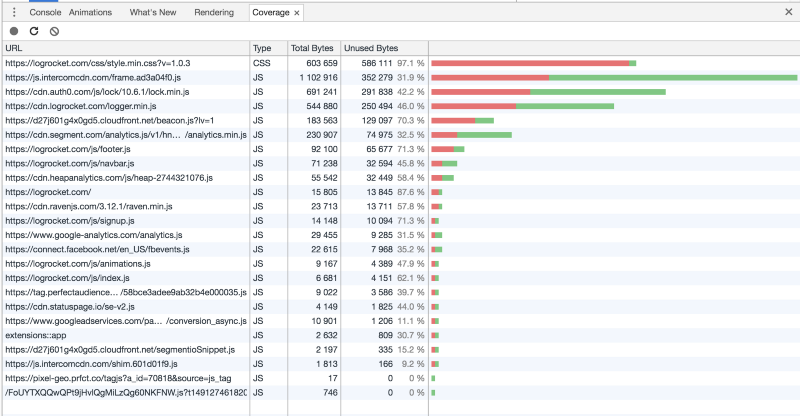

Thu Apr 20 2017 17:00:00 GMT+0500 (+05)
В этом году, более 64 000 разработчиков прошли мега опрос на StackOverflow.
Новая крутая тулза в Chrome Canary 59: Сoverage
Показывает соотношение кода, который реально отработал, и который просто лежит и ничего не делает для каждого файла. Для CSS и JS. Через пару недель и в обычный Chrome завезут.

Facebook теперь собирает React не вебпаком, а Rollup.
Может где-то в наших проектах оно тоже будет удобнее?
Большой переезд
(есть jscodeshift для миграции)
async function* getItemsReallySlowly(items: Iterable) {
for (const item of items) {
await sleep(500);
yield item;
}
}